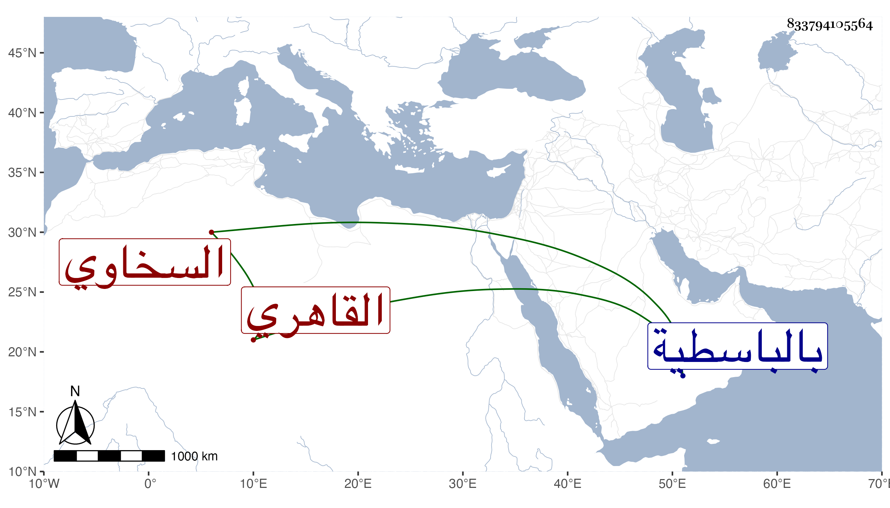

0902Sakhawi.DawLamic.ITO20230111-ara1.EIS1600.833794105564
Biography ID: 833794105564
898
زين العابدين جماعة منهم ابن شقيقي أبي بكر بن عبد الرحمن بن أبي بكر السخاوي الأصل القاهري واسمه محمد ولكن غلب عليه هذا حتى هجر اسمه . ولد ضحى الثلاثاء ثالث عشر صفر سنة تسع وسبعين وثمانمائة بمنزلنا المجاور لسكن شيخنا بحذاء المنكوتمرية ونشأ به في كنف أبويه فحفظ القرآن والجرومية والعمدة والمنهاح وجمع الجوامع وألفية النحو وغيرها وعرض على غير واحد وفهم في العربية وغيرها ، ولم يلبث أن توفى والده فتشاغل عنها إلى أن رجعت في محرم سنة خمس وتسعين فقرأ علي قليلا وكذا على البدر حسن الأعرج في المنهاج والشمس النوبي في النحو وغيره ، وباشر الخطابة وظيفته ووظيفة أخيه بالباسطية وتزوج وولد له والله يصلحه .
